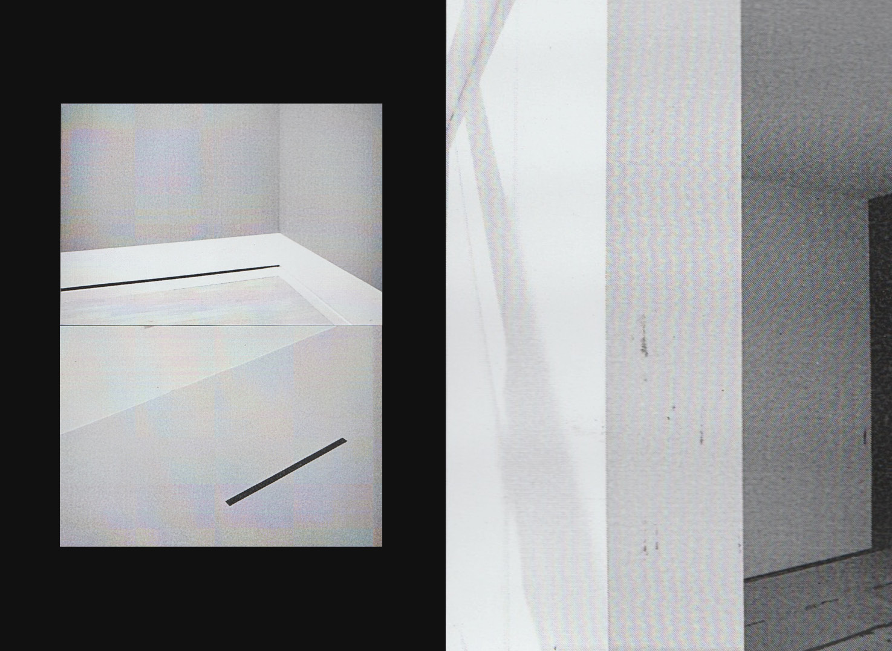
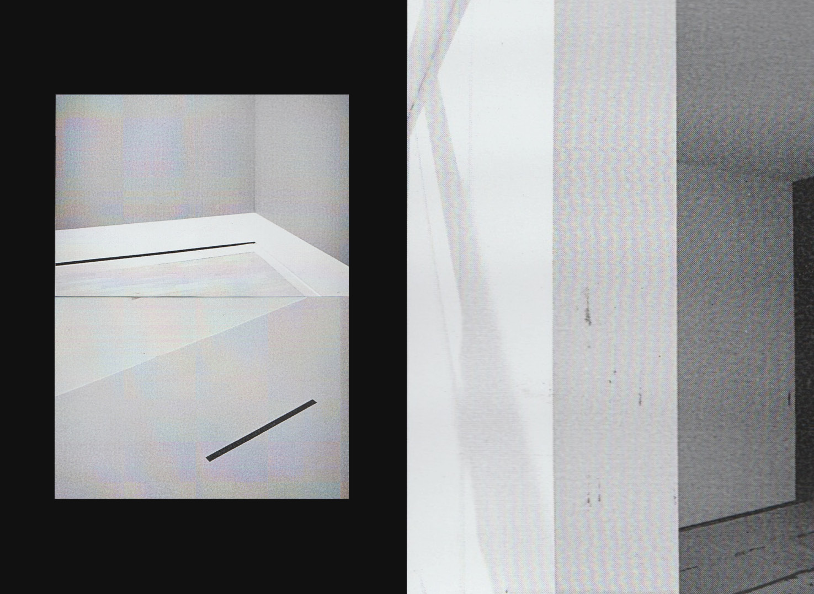
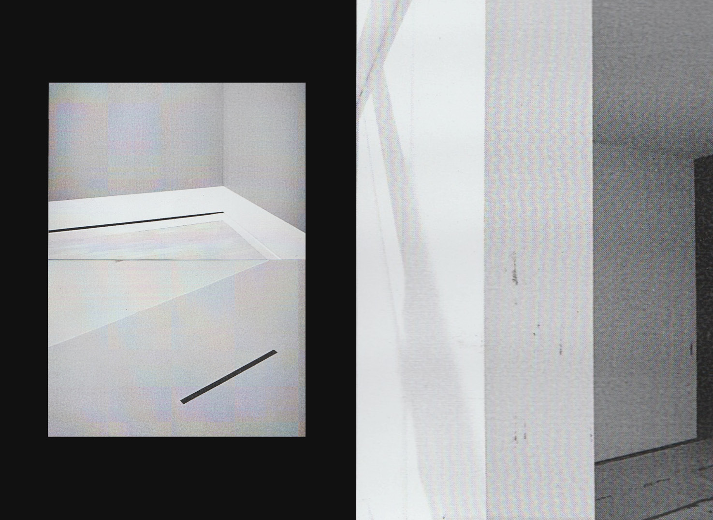
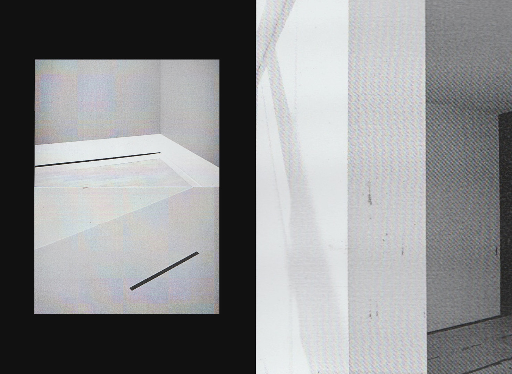

 

Éditer l’espace — Imprimer l’exposition est à la fois un dispositif de monstration de contenus liés au domaine artistique et une plateforme de production d’expositions en lignes. Chaque espace mis à la disposition des visiteurs est une invitation à interragir, comprendre et déconstruire la notion d’exposition. En s’affranchissant des contraintes spatio-temporelles du white cube traditionnel, cet espace en ligne cherche à questionner différentes façons de capturer, archiver, mémoriser et documenter un espace de monstration. Comment en conserver la trace? Quels statuts donner aux documents de l’exposition et quels sont leurs modes de persistance? Les terrains d’expérimentations suivants ont été imaginés par Pricilla Degardin, dans le cadre de son diplôme de fin d’étude à la Haute école des arts du Rhin de Strasbourg.